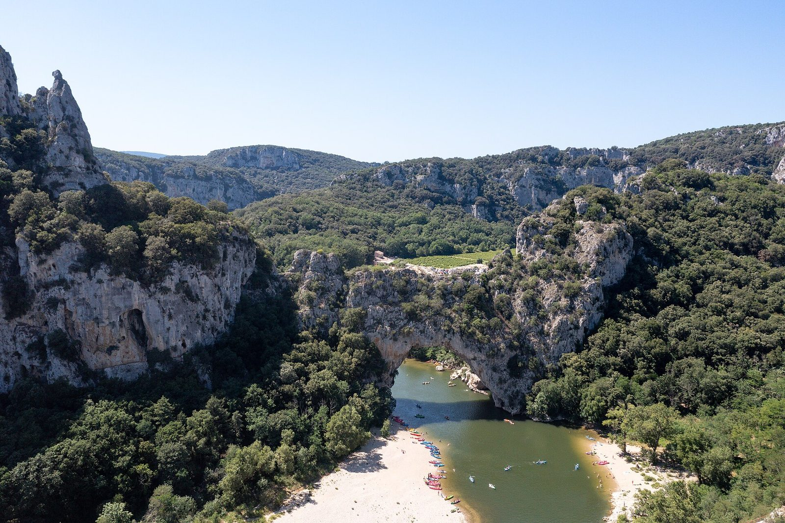
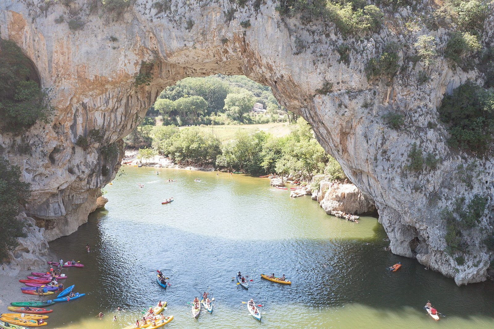
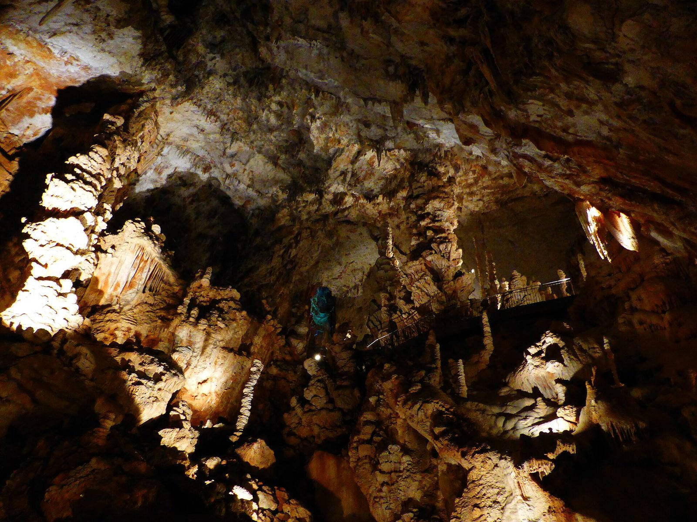
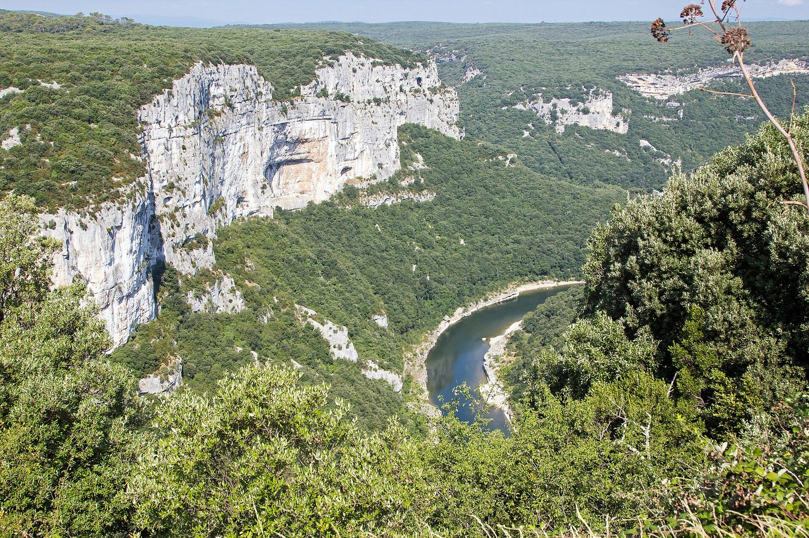
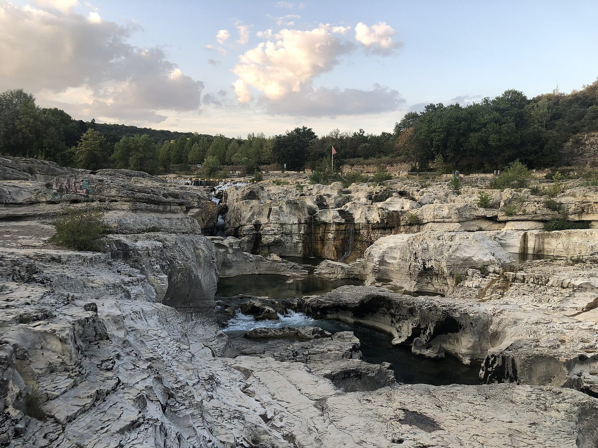
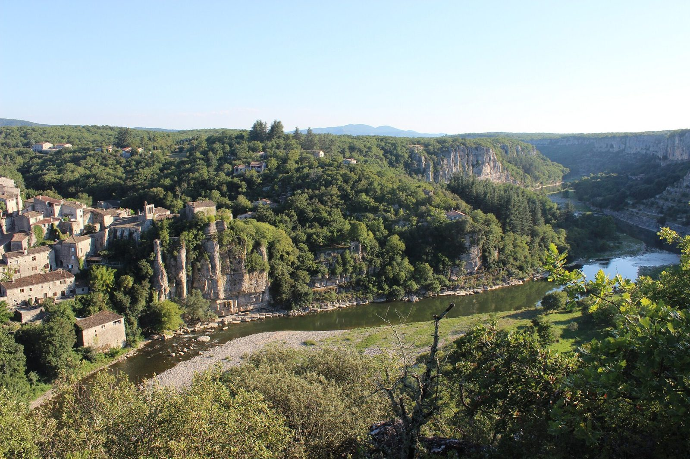
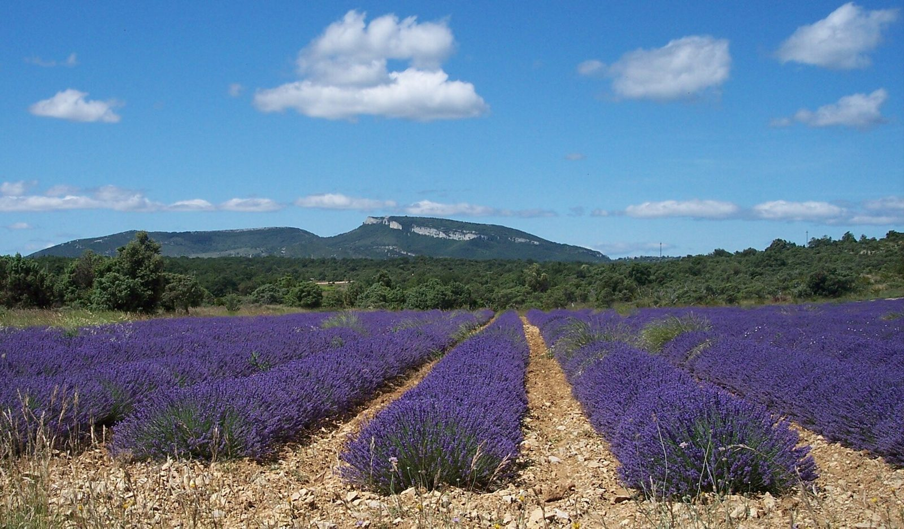
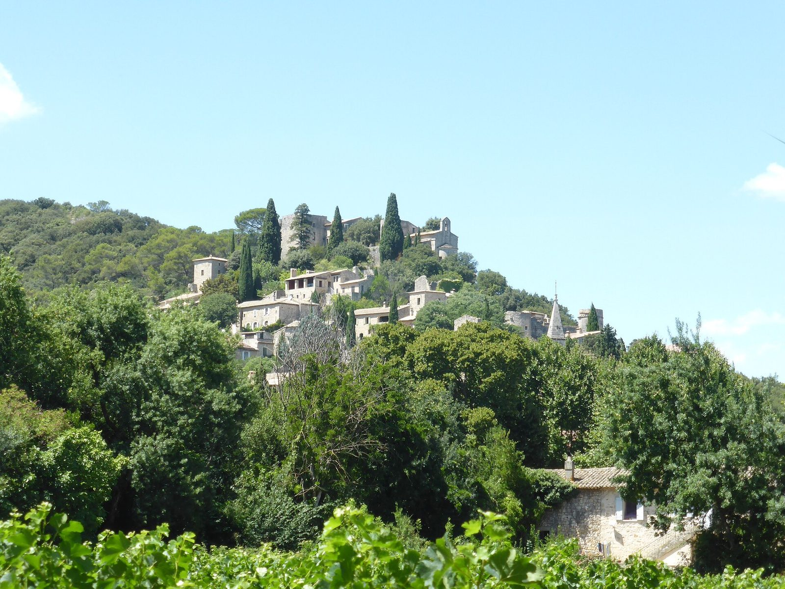

Accueil · La région
Entre les gorges de l’Ardèche et la Cèze
Aux portes de la Provence, au carrefour de la Drôme, du Vaucluse et du Gard : un point de départ idéal pour l’Ardèche du Sud.

Le Pont d’Arc et la descente en canoë
À 15 km, Vallon-Pont-d’Arc est le point de départ des descentes en canoë sous l’arche naturelle du Pont d’Arc. Tout près, la Grotte Chauvet 2 fait découvrir des peintures parmi les plus anciennes du monde.

L’Aven d’Orgnac
Le Grand Site de France est sur la commune : une descente spectaculaire dans les salles souterraines, puis le musée de la Cité de la Préhistoire.

Les gorges de l’Ardèche
La route touristique longe les falaises de belvédère en belvédère, jusqu’au cirque de la Madeleine. Les sentiers descendent jusqu’aux plages de galets.

Les cascades du Sautadet
Dans la vallée de la Cèze, la rivière creuse la roche en marmites et en cascades, au pied de La Roque-sur-Cèze.

Les villages de caractère
Balazuc, Labeaume, Ruoms, Joyeuse, Banne : des dizaines de villages de pierre à découvrir au gré de vos escapades.

La lavande, les vignes et les marchés
En juin et juillet, les champs de lavande fleurissent tout autour d’Orgnac. Le reste de l’été, ce sont les caves, les producteurs et les marchés du Sud-Ardèche.
Photos de la région : Wikimedia Commons. Le Pont d’Arc et la descente en canoë : "dronepicr" (CC BY 2.0) · L’Aven d’Orgnac : Jacques Le Letty (CC BY-SA 4.0) · Les gorges de l’Ardèche : Superbass (CC BY-SA 4.0) · Les cascades du Sautadet : Einaz80 (CC BY-SA 4.0) · Les villages de caractère : Bernard CONSTANT (CC BY-SA 4.0) · La lavande, les vignes et les marchés : MAIRIE DE LARNAS (CC BY-SA 4.0) · Le Pont d’Arc vu du ciel : "dronepicr" (CC BY 2.0) · La Roque-sur-Cèze : Jacques Le Letty (CC BY-SA 4.0).

Le soir, retour au calme du mas
Après une journée de canoë ou de grottes, la piscine vous attend au milieu des vignes.